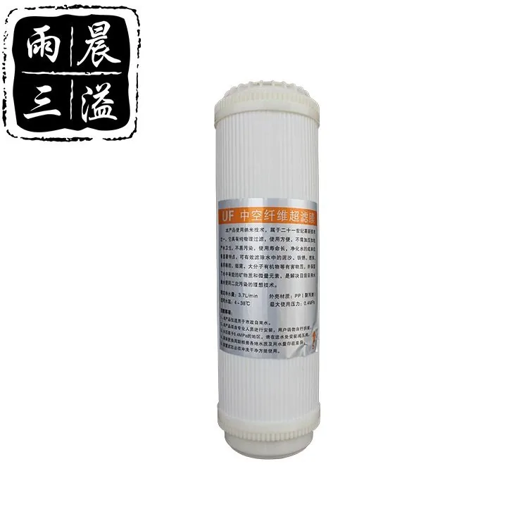

Ultra Film Filter Cartridge
Filter CartridgeUltra Film Filter Cartridge is an inline water filter cartridge for drinking-water systems that need a specific media function and compact installation position. Confirm connector size, media purpose, compatible tubing, expected service life, label artwork and package plan.
Buyer selection notes
Ultra Film Filter Cartridge should be matched by media function, connector size, tubing compatibility, installation position and expected service life. Inline replacement filter cartridge buyers usually need clear labeling, retail box options and compatibility notes for purifier or dispenser programs.
Details to confirm before quotation
- Media function, installation position and connector size
- Compatible tubing, purifier model and expected service life
- Taste, mineral, resin, UF or specialty filter requirement
- Label artwork, retail box and replacement-kit planning
Buyer notes for Ultra Film Filter Cartridge
For Ultra Film Filter Cartridge, specialty cartridge pages need clear functional boundaries. Describe where the cartridge is installed, what media it uses, how it supports taste or system protection, and what buyers must confirm for compatibility.
Information to confirm
- Media function and installation position
- Connection size and compatible tubing
- Expected service life and replacement-set plan
- Label, package and market documentation needs
Technical Specifications
| Type | Ultra Film |
|---|---|
| Filtration | 0.01μm |
Key Features
- Configured around Ultra Film Filter Cartridge with model-specific application details.
- Cartridge review covers media, length, diameter, end cap, seal and compatible housings.
- Private-label labels, manuals and cartons can be prepared after model confirmation.
- Sampling and bulk orders should confirm target market and installation conditions.
- Bulk pack, shrink wrap, label and replacement-set packing can be matched to distributor needs.
Related Products
Related Products

Multi-Stage Filter Cartridge Combination
Multi-Stage Filter Cartridge Combination — Combination: Custom.
Send Inquiry
Medium Size Water Filter w/ Copper Connector
Medium Size Water Filter w/ Copper Connector — Connector: Copper.
Send Inquiry
Request a quote for Ultra Film Filter Cartridge
Send quantity, target market, configuration notes and packaging requirements for Ultra Film Filter Cartridge. Yuchen Water will confirm matching options, accessories and export details before pricing.